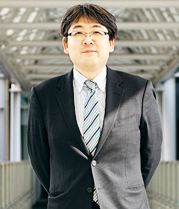
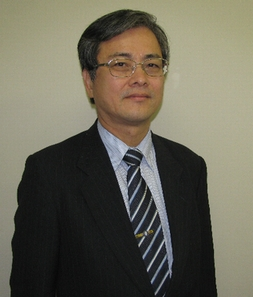

Information Security Lab. Website
情報セキュリティ研究室 ホームページ
MENU
TDU-LINK
-教授紹介 -
猪俣 敦夫 教授
| 経歴 | ||||||||||
|---|---|---|---|---|---|---|---|---|---|---|
|
業績など | |||||||||
|
平成18年6月情報処理学会論文賞受賞 平成26年7月(ISC)2 2014 Asia-Pacific Information Security Leadership Achievements JPCERTコーディネーションセンター 理事 京都女子大学、同志社女子大学(関西)非常勤講師 経済産業省 IoTセキュリティWG座長 ベネッセHD株式会社 情報セキュリティ監視委員 (公財)日本適合性認定協会(JAB)ISO/IEC17065 技術審査員 東京都足立区 情報公開・個人情報保護審議会委員 IPAセキュリティキャンプ全国大会 講師 NICT CYDER,SECHACK365委員 奈良県警察 サイバーセキュリティ対策アドバイザー |
主な著書 | |||||||||
|
サイバーセキュリティ入門ー私たちを取り巻く光と闇ー 共立出版 2016年 |

佐々木 良一 教授
| 経歴 | ||||||||||
|---|---|---|---|---|---|---|---|---|---|---|
|
業績など | |||||||||
|
昭和58年電気学会論文賞受賞 平成10年電気学会著作賞受賞 平成13年度情報処理学会論文賞受賞 平成19年総務大臣表彰（情報セキュリティ促進部門） 平成19年度「情報セキュリティの日」功労者表彰 平成20年度セキュリティ文化賞、情報処理学会功績賞などを受賞 ＩＥＥＥ、情報処理学会、電子情報通信学会、電気学会等の会員。 情報処理学会コンピュータセキュリティ研究会顧問。 日本セキュリティ・マネージメント学会会長、 内閣官房情報セキュリティセンター情報セキュリティ補佐官、 国立情報学研究所客員教授。 |
主な著書 | |||||||||
|
「情報科学入門 教養としてのコンピュータ」 日本理工出版会 1995年 「インターネットセキュリティ 基礎と対策技術」(共著) オーム社 1996年 「インターネットセキュリティ入門」 岩波新書 1999年 「インターネットコマース新動向と技術」(共編著) 共立出版 2000年 「ITリスクの考え方」 岩波新書 2008年 |
佐々木教授のページはこちら
Prof.Sasaki's page
■問い合わせ【住所】
〒120-8551 東京都足立区千住旭町5番
東京電機大学 情報セキュリティ研究室
Copyright (C) 2012 Information Security Laboratory, All rights reserved.